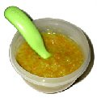

Homemade baby food is a natural and inexpensive way to feed your baby. A good investment for your bank account and your baby’s health is a small food grinder. You may already have a small food processor or hand blender which will make the preparation of healthy baby food quick and easy. Starting your baby on solid foods can be a fun activity for you and your baby. Armed with a few basic utensils and a bit of baby-food know-how, preparing fresh and healthy baby food is not a challenge. The healthiest foods for your baby are fresh foods closest to their natural state. You can refer to the healthyfood pyramid when preparing homemade baby food. SafetyMake sure that the fresh or frozen fresh foods that you use to prepare homemade baby food were hygienically produced, handled and prepared. Young children, especially babies, are more vulnerable to food poisoning. Make sure to keep raw meats and fish separate from other foods and be sure that they are thoroughly cooked when preparing them for your baby. Raw egg products such as mayonnaise should not be used in homemade baby food or given to babies. Make sure that eggs are thoroughly cooked before giving them to your baby. Warm temperatures are bacteria’s favorite breeding playground. When preparing homemade baby food resist speedy food preparing – heating it to warm – always boil it first and then cool it down to the right temperature. The main risk to babies’ health that comes via their food is pesticide residues. The only way to completely avoid them is to only buy organically produced fruits and vegetables. Not every parent can afford the expense of organically grown foods however it is possible to minimize risks of exposure to harmful pesticides by washing fruits and vegetables with extra care, using soap and a clean sponge. Methods and UtensilsYour baby’s first foods are the easiest to prepare. You may choose to start with easily strained ripe banana or avocado. Stewed fruits like apple, peach and apricot are also easily mashed to the right consistency for your baby. Other foods to try are boiled potatoes and yams, carrots, spinach, and plantains. KidCo Manual Food Mill & Tote KidCo Electric Food Mill Munchkin Electric Baby Food Chopper Fresh Baby So Easy Baby Food Kit Fork for mashingUse a fork to mash soft homemade baby food. Ripe bananas and cooked foods without skin or seeds can be used. Cooked apple, white or sweet potatoes, squash, carrots and egg yolks are easy to mash.StrainerYou can use a strainer or clean, fine mesh wire and spoon to push the food through. Repeat the process if the food is still chunky.Food grinder or millCut the food into pieces. Put the cooked food through the food mill and use it to grind up meats Knife for choppingFoods can be finely chopped or scraped with a knife, and mixed with liquid.BlenderUsing the blender is the easy and fast way to make baby food. Add fruit juice, breast milk or juice from the food you are making or water into the blender. Cut food into cubes and add to the juice. Blend to desired consistency. Use a rubber spatula to push food down towards the blades when the motor is turned off. The blender is a great tool for making larger amounts of food at the same time. Before You BeginAlways wash your hands with soap before preparing food. Use a clean cutting board, utensils, and containers to cook and store food. Always wash fruits and vegetables and remove seeds and pits before using. Instructions for Making Basic Homemade Baby Food 1 - The best way to maintain the nutrients of fruits and vegetables when cooking is to steam them. It's possible to steam food in a microwave, in the oven or on the stove.  2 - Set aside the liquid that the food was cooked in to add in later to adjust the consistency of your home made baby food. 3 – Put the steamed fruits or vegetables into the food processor or blender. 4 - Add liquids from the cooked fruits or vegetables as you blend them. You may choose to add breast milk to add a familiar flavor to the baby food. 5 - Cover and refrigerate or freeze cooked the baby food immediately after it is prepared. Keep it in a covered container in the refrigerator. After three days of refrigeration, it is no longer fresh so please do not give it to your baby after three days. Freezing in CubesFreezing the puree in ice-cube trays and then transferring into freezer bags or plastic freezer containers is a great way to store your home made baby food. This way you can offer your baby a wide variety without necessarily preparing them everyday! 
Fresh Baby So Easy Baby Food Trays More ideas...Your baby will enjoy these creative and delicious homemade baby food recipes by Christine, an expert on making fresh and healthy food for your baby at every stage.
|